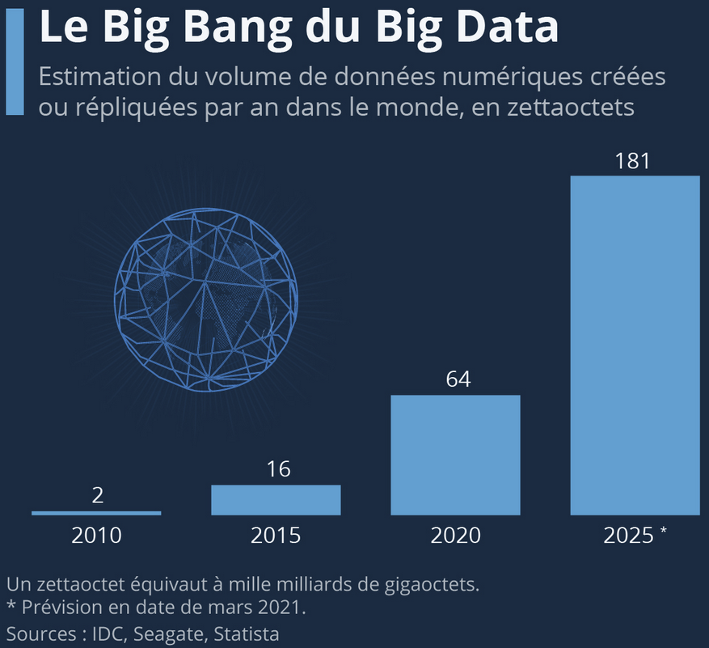

Aspects juridiques et réglementaires du big data : un retour d’expérience
BCEAO - Jour 4
28 septembre 2023
⚠️ Disclaimer ⚠️
- Nous ne sommes pas des experts juridiques.
- Cette présentation ne vise qu’à introduire des concepts généraux.
- ❓ Pour des questions juridiques précises, veuillez contacter l’Unité Affaires Juridiques et Contentieuses (UAJC) :
- Dirigée par Patrick Redor à patrick.redor@insee.fr
1️⃣ Les nouveaux enjeux juridiques lié au big data
Collecte des données
- Nombreux acteurs privés et publics peuvent collecter des données produites directement ou indirectement par les individus.
- Collecte de données personnelles sans consentement explicite.
- Possibilité de violation de la vie privée des utilisateurs.
- ➡️ Explication des motifs et intentions de collecte des données nécessaire.
Exemple de risque potentiel
Application de santé collectant des données biométriques de ses utilisateurs sans leur consentement explicite.
Croissance du numérique

Stockage et sécurité des données
- Volume des données pose la difficulté du stockage.
- Coûts d’investissement importants et marché monopolisé par les GAFAM.
- Problématique de la souveraineté numérique.
- ➡️ Mesures de sécurité essentielles pour la protection des données.
Exemple de risque potentiel
- Possibilité de violation de la sécurité des données ou de partage de données avec une entité gouvernementale.
- Incendie OVH en janvier 2023.
Open Data et secteur public
- Mise à disposition publiquement et gratuitement des données.
- En France, loi Lemaire 2016 :
- Open Data des autorités publiques dans un cadre reglementé.
- Objectif double üéØ :
- 1️⃣ Transparence démocratique et ouverture d’information.
- 2️⃣ Favoriser l’innovation économique et sociale.
- L’Open Data se démocratise aussi dans le secteur privé !
Propriété intellectuelle
- Gestion des licences ©️ :
- Développement de l’open source et du partage de données.
- Nécessité d’apposer et de respecter des licences claires.
- Équilibre difficile entre protection et innovation ⚖️ :
- Les lois sur le droit d’auteur établies ont du mal à prendre en compte les nouvelles technologies
- Développement de nouveaux outils d’Intelligence Artificielle (IA)
Des méthodologies toujours plus innovantes…
- Grands modèles de langage (LLM)
- ChatGPT, LLama2, Bard…
- Modèles de génération d’images
- Midjourney, Stable Diffusion, Dall-E
- Modèles Deep fake :
- FakeApp
… créant de nouvelles problématiques
- Défi démocratique
- Gestions des droits d’auteurs :
- Litige GoT-OpenAI
- Poursuites Stability AI/ Midjourney
- Failles de sécurité (Samsung-OpenAI)
- Réponses non sourcées
- Quid des données générées ?
2️⃣ Réglementations clés
Loi sur le secret statistique 7 juin 1951
- Contexte :
- üá´üá∑ Loi Fran√ßaise, promulgu√©e en 1951.
- Protéger les personnes physiques et morales
- Garantir la confiance des citoyens envers l’Insee
Loi sur le secret statistique 7 juin 1951
- Communication strictement interdite des données individuelles :
- üö´ R√©utilisation √† des fins de contr√¥le fiscal ou de r√©pression √©conomique
- S’applique à la diffusion de statistiques :
- üö´ Diffusion de donn√©es permettant la r√©identification
- Création du Cnis, du comité du Label et de l’ASP
Loi informatique et liberté 1978
- Contexte :
- üá´üá∑ Loi Fran√ßaise, promulgu√©e en 1978.
- ü§ñ Concerne les traitements automatis√©s de donn√©es personnelles
Loi informatique et liberté 1978
- Déclaration à la CNIL des fichiers contenant des données personnelles
- üö´ Collection de donn√©es √† caract√®re sensible (religion, la sant√©, la politique, etc) interdite
- Principe de collecte loyale de données
- Assurer la sécurité des données collectées
- Obligation d’informer les individus concernés de la collecte de leurs données
- Droit à l’accès, la modification et la suppression des données en question
Loi pour une République Numérique
- Contexte :
- üá´üá∑ Loi Fran√ßaise, promulgu√©e en 2016.
- üìà R√©ponse √† l‚Äôexpansion rapide du num√©rique dans la soci√©t√©.
- ⚖️ Equilibre entre innovation, inclusion, protection et confiance.
Circulation des données et du savoir
- L’ouverture des données publiques par défaut :
- Création d’un service public de la données Etalab.
- Libre accès des papiers académique financés à +50% par fond public.
- Ouverture des données d’intérêt général (transports, eau, déchets, consommation d’énergie…).
La protection des droits dans la société numérique
- Principe de la neutralité de l’internet inscrit dans le droit français ➡️ Arcep
- 3 obligations des plateformes en ligne : loyauté, clarté et transparence
- Protection de la vie privée sur internet :
- Droit à l’oubli numérique
- Droit à la mort numérique
- Règle du secret des correspondances privées (https://www.legifrance.gouv.fr/jorf/id/JORFTEXT000034307602)
L’accès au numérique pour tous
- Le numérique dans tous les territoires :
- Couverture 4G + sanctions opérateurs
- Le numérique au bénéfice des publics fragiles
Règlement Général sur la Protection des Données (RGPD) de l’UE :
- Contexte :
- üá™üá∫ Loi Europ√©enne, promulgu√©e en 2016.
- Harmonisation des règles de protection des données
- Le pendant de la Loi informatique et liberté 1978 française
Champ d’action du RGPD :
- Tout organisme peut être concerné
- RGPD s’applique à toute organisation qui traite des données personnelles dès lors que :
- Établie sur le territoire de l’Union européenne
- Activité cible directement des résidents européens
Data Act :
- Contexte :
- üá™üá∫ Loi Europ√©enne, adopt√©e en 2022.
- Clarifie que peut créer de la valeur à partir des données et sous quelles conditions
Une répartition équitable de la valeur issue des données
- Internet of Things (IoT) génère beaucoup de données personnelles
- Potentiel économique est contrôlé par quelques acteurs dominants
- Favoriser l’ouverture des données IoT :
- Accès aux fournisseurs de service d’après vente
Lever les obstacles à la concurrence du Cloud
- Supprimer les principales barrières érigées par les fournisseurs dominants pour accéder à un cloud concurrent :
- Suppression des frais de transfert de données et de migration
- üéØ Pr√©server la libert√© de choix des utilisateurs et √† stimuler l‚Äôinnovation sur le march√©
3️⃣ Retour d’expériences à l’Insee
1️⃣ Le cas du webscrapping
Quid des prérogatives de puissance publique pour recueillir de l’information ?
- En Europe, la loi n° 633 du 22 avril 1941, pour la protection du droit d’auteur, prévoit une exception en cas d’utilisation d’une base de données à des fins de recherche scientifique à but non lucratif (art. 64-sexies de la loi n° 633/1941 modifié).
- Bien que la recherche et la production statistiques ne soient pas explicitement mentionnées, ces dispositions apportent un cadre raisonnable pour permettre aux statisticiens publics d’accéder aux informations des bases de données en ligne et pour traiter ces informations afin de produire des résultats statistiques anonymisés.
Scraping à l’INSEE
Quand ?
- Le web scraping est utilisé en dernier recours, l’INSEE favorisera :
- Les accords avec des partenaires (ex : seloger.com)
- L’utilisation d’API (ex : Qwant, Yahoo Finance)
- Les sources de données publiques
- Le web scraping devient cependant une source de données grandissante.
Scraping à l’INSEE
Utilisation
Le scraping est notamment utilisé pour le calcul des indices des prix :
- Prix des transports (trains via site de la
SNCF, domaine maritime) ; - Prix de produits divers (surtout de l’électronique) ;
- Prix dans le domaine de l’hôtellerie (avec
booking.com). D’autres utilisations ponctuelles peuvent également être faites.
Scraping à l’INSEE
Organisation
- Un scraping encore par cas d’usage, avec une gestion plus globale en cours de maturité
- Objectif de mutualisation entre les équipes statistiques
- La logique open source comme moyen de mutualisation
- Beaucoup de
Python, un peu deRet deJava
Les prix dans le domaine de l’hôtellerie (Booking.com)
Références
- Un travail ayant donné lieu à une publication
- Adrien Montbroussous, Camille Freppel and Ombéline Guillon, “Web scraping of a booking platform: exploring new data and methodology for the hotel service consumer price index”, Paper for the 17th International Conference of the Ottawa Group, Rome
- Une présentation plus accessible ici
Les prix dans le domaine de l’hôtellerie (Booking.com)
Le code
- But : collecter davantage de données pour calculer au mieux les indices d’évolution de prix pour l’hôtellerie.
- La partie ‘scraping’ du projet est disponible ici.
- Pour plus d’informations, contacter (INSEE).
- La conférence associée aux présentations : ici
- D’autres projets similaires de scraping mentionnés
Ventes d’articles électroniques
- But : collecter davantage de données pour calculer au mieux les indices de prix associés au secteur
- Projet encore à une étape expérimentale
- Scraping de Boulanger : ici
- Scraping de Rue du Commerce : ici
- Pour plus d’informations, contacter (INSEE).
Scraping de la SNCF
Contexte
- Le calcul de l’IPC tient compte de :
- L’indice des prix des trains Grandes Lignes
- Le transport des passagers en train
- Les prix utilisés étaient fondés sur un document publié annuellement par la SNCF. Mais cette méthode :
- Ne reflète pas les variations infra-annuelles réelles, en particulier pour les TGV
- Ne reflète pas les prix effectivement payés par les consommateurs
- Ne suit pas les recommandations des institutions internationales
Scraping de la SNCF
Introduction du webscraping
- Sous forme expérimentale depuis 2018, indices publiés depuis 2020
- Collecte quotidienne pour capter la volatilité des prix
- Requêtes effectuées pour plusieurs couples origine-destination, types de train, antériorités, profils passagers et horaires
- Près de 23 000 requêtes par nuit
- Un important travail statistique avec les données ainsi obtenues s’ensuit.
- Stratification en cellules homogènes de prix
- Un micro-indice calculé par cellule
- Agrégation des micro-indices avec un indice de Laspeyres arithmétique
Scraping de la SNCF
Comparaison des résultats

D’autres ressources pour le scraping lié à l’IPC
- Guidelines d’Eurostat sur le scraping lié à l’indice des prix à la consommation
- Annexe 3 consacrée aux travaux de l’INSEE sur Boulanger et Rue du Commerce